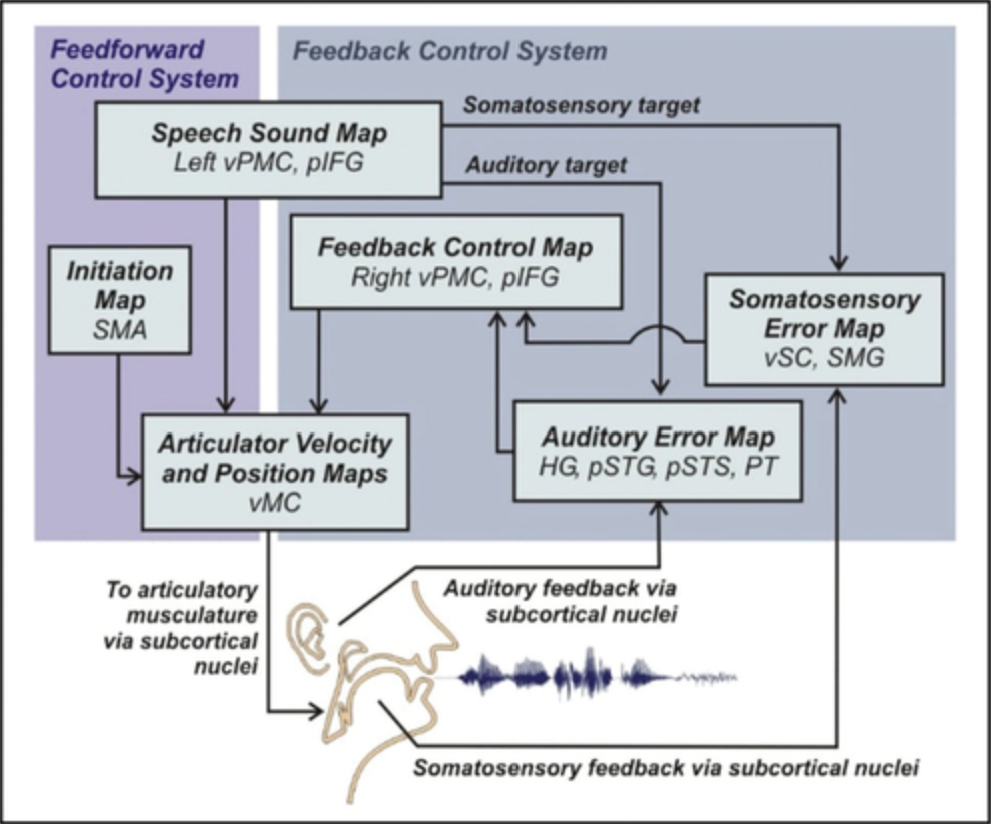

Problem
Children acquire speech by imitating what they hear, and adults maintain it by monitoring their own voice and correcting errors. Deaf and hard of hearing speakers lack this auditory feedback. Lip reading and sign language support communication, but neither tells speakers when they produce a sound incorrectly. They move the tongue, lips, and vocal folds without hearing the result, which often leads to a “deaf accent” that listeners find hard to understand.
I am designing a wearable collar and phone app that measure how a person speaks and convert those measurements into visual and vibrotactile feedback. The device targets two groups: people born deaf who are learning to speak, and people who lost their hearing later and want to keep their speech clear. Many Deaf people prefer sign language, so speech training remains a personal choice.
I based the design on three areas of research: speech acoustics, neural models of speech motor control, and common errors in deaf speech.
Background
Speech Production
Speech production has three stages. The lungs supply airflow, the vocal folds act as the source, and the vocal tract acts as the filter.
Engineers model the same system as signal blocks. A pulse generator represents the vibrating vocal folds, and a noise source represents the hiss in sounds like s and f. The filter changes over time as the tongue, jaw, and lips move.
Each stage changes the signal. The lungs provide steady pressure but no sound. The vocal folds chop that airflow into pulses, which contain many harmonics of the fundamental frequency. The vocal tract boosts the harmonics near its resonances, called formants, and the lips slightly boost high frequencies.
This model guides where the sensors go. A throat sensor measures the source before the vocal tract filters it, while a microphone records the final output.
Neural Control of Speech
The DIVA model (Directions Into Velocities of Articulators) is a neural network model of how the brain learns and controls speech [3, 5]. Each box in the diagram below is a map of neurons in a specific brain region. In the feedforward system, the speech sound map in the left premotor cortex sends learned motor commands to the motor cortex, which moves the tongue, lips, jaw, and larynx. The initiation map in the supplementary motor area starts each sound. In the feedback system, the same speech sound map sends auditory and somatosensory targets, which specify how each sound should sound and feel. Error maps in the auditory and somatosensory cortex compare those targets with what the speaker actually hears and feels, and the right premotor cortex turns any mismatch into a correction [1].

Infants learn by babbling, which links movements to how they sound and feel, and then by imitating the speech they hear. Early attempts depend heavily on feedback, and each correction updates the feedforward command, so with practice the brain relies on feedback only for unexpected errors.
Researchers test this loop with delayed auditory feedback, which plays a speaker’s voice back through headphones a fraction of a second late. Fluent speakers slow down or start to stutter, while people who stutter often become more fluent. In one study, researchers recorded brain activity in 15 epilepsy surgery patients as they read aloud with their voice delayed by 0, 50, 100, or 200 ms [2]. Speech slowed as the delay grew, especially for sentences. Auditory areas activated after speech onset and responded more strongly to longer delays, which suggests they detect errors. The authors concluded that the superior temporal gyrus, the supramarginal gyrus, and especially the dorsal precentral gyrus handle auditory feedback, and that different networks may process timing and pitch errors.
A child born deaf never receives the auditory half of this loop. The child never learns auditory targets, and without sound, nothing tells them which movements produce a correct sound, so they also struggle to learn somatosensory targets. The device has to supply the missing error signal. When an attempt is correct, the device confirms it, so the learner can associate the sound with its somatosensory pattern and, over many sessions, form targets that last without the device. For people who lose their hearing later, the device helps maintain speech that would otherwise degrade without feedback.
The delay study also sets a latency requirement. Because delays of 50 to 200 ms disrupt fluent speakers, live feedback must arrive in under 50 ms. Because pitch and timing errors may involve different networks, the app can train them in separate exercises.
Characteristics of Deaf Speech
The larynx and articulators function normally, but the speaker cannot detect their own errors. Severity depends on the degree of hearing loss, the age of onset, and whether the person uses a cochlear implant. In older studies, unfamiliar listeners understood the speech of profoundly deaf children only about 20% of the time, though cochlear implants have since improved intelligibility for many.
Source errors affect voice quality. Fundamental frequency is often too high, unstable, or flat, so questions and statements sound alike. Speakers have trouble controlling loudness, and the voice can sound strained.
Filter errors affect articulation. Vowels centralize toward “uh,” so beat, bit, and bat sound alike. Speakers often drop or replace consonants that are not visible on the lips (k, g, ng, h), while visible ones (p, b, m, f, v, w) stay clearer. Speakers distort or omit high-frequency sounds like s, sh, f, and th because these fall above about 4 kHz, where hearing loss is worst. Speakers also drop final consonants, confuse pairs like b/p and t/k, and struggle to control nasal resonance.
Prosody also suffers. Speech is slow, every syllable gets equal stress, and poor breath control causes pauses in unnatural places.
Prior Work
Most speech-training apps rely only on the phone’s microphone. The microphone picks up background noise and other voices. It can tell a learner that a sound was wrong, but not what the mouth did wrong, so the learner has to guess how to fix it.
Delsys uses surface EMG (sEMG) sensors on the face and neck to convert speech muscle signals into synthesized speech for people who cannot produce a voice [4]. Earlier sEMG work recognized words and phrases with about 90% accuracy. Deaf learners do not need a synthesized voice, but the same sensors could track jaw, tongue base, and lip activity for feedback.
Sensor Selection
Each error type needs a sensor that can detect it. A throat sensor measures the source, a microphone records the radiated sound, and a camera tracks lip and jaw movement.
| Common error | Sensor | Feedback |
|---|---|---|
| Pitch too high or unstable | Throat accelerometer or microphone | Live pitch line against a target range |
| Too much nasality | Nose and throat accelerometers (energy ratio) | Nasality meter |
| Voicing errors (b/p, d/t) | Throat accelerometer (voicing onset timing) | Voiced/unvoiced indicator |
| Lip and jaw shape | Front camera with face landmarks | Overlay of target vs. actual lip shape |
| Tongue placement (t, k, s, sh) | sEMG under the jaw, or electropalatography | Tongue-position map |
| Breathiness and loudness | Microphone plus chest strap or airflow sensor | Effort and breath gauge |
| Rhythm and stress | Microphone and sEMG envelope | Syllable timing bars |
| Vowels sound alike | Microphone (formants F1/F2) plus sEMG under the chin | Vowel chart showing attempt vs. target |
| s/sh distorted or missing | Microphone (energy above 4 kHz) | Hiss-strength meter |
The tongue is the hardest articulator to measure and the most important, since tongue errors cause the vowel centralization and k/g errors that most reduce intelligibility. It is hidden from the camera. Electropalatography (a thin sensor plate on the roof of the mouth) and ultrasound are accurate, but they are clinical tools too expensive for home use. sEMG under the chin gives only a rough signal, but it is the most affordable wearable option, so I chose it.
System Design
Wearable Collar
The collar has four components.
A throat accelerometer sits beside the thyroid cartilage or just above the sternal notch and picks up vocal fold vibration through the skin. Measuring vibration before the vocal tract filters it yields a clean pitch signal (80 to 400 Hz) and an on/off voicing signal for pairs like b and p, with almost no background noise. The sensor must be a bone-conduction voice pickup or a wide-bandwidth MEMS accelerometer sampled at 4 kHz or more, because typical IMU accelerometers sample too slowly. A 50 to 70 Hz high-pass filter removes swallowing and movement artifacts.
Two to four sEMG channels under the chin and on the front of the neck, roughly where Delsys placed them, sense the muscles that move the jaw, tongue base, and lips. They require a biopotential front end (an ADS1299-class chip) sampling at 1 to 2 kHz per channel, with a 20 to 450 Hz band-pass filter and a 60 Hz notch. The signals vary between people and placements, so each user needs their own model and a quick calibration every session.
A small nasal accelerometer clips to the side of the nose. When sound passes through the nose, its signal rises relative to the throat sensor’s. This nasal-to-throat ratio is an established, low-cost measure of nasality that cancels out loudness. The user calibrates it at the start of each session with a nasal sound (“mmm”) and an oral sound (“aaa”).
A Bluetooth Low Energy microcontroller, such as the nRF52840 or ESP32-S3, samples every sensor on one clock. It computes pitch, voicing, the nasality ratio, and sEMG envelopes on board and sends only those features to the phone, because streaming raw data (about 250 kbps) would use much of the Bluetooth bandwidth. I expect an end-to-end latency of 20 to 50 ms.
Phone App
The phone contributes its microphone and front camera. The microphone measures loudness, rhythm, and s/sh quality and cross-checks the throat sensor's pitch. Both sensors detect voicing onset, and the app uses that moment to synchronize the collar and phone. The camera tracks lip rounding, lip closure, and jaw opening.
The app compares each attempt with a target recording made by a speech-language pathologist or by the user on a good attempt, so every user has individual targets. Dynamic time warping lines up attempts that vary in speed. The app shows only one or two measures at a time to limit cognitive load, and it saves each session's scores to track progress.
Feedback Strategy
On-screen visual feedback, such as a pitch line, nasality meter, or lip overlay, gives the most detail and suits early learning. Vibration motors on the wrist or collar buzz when pitch drifts or nasality is too high, so the learner can use them in conversation without watching a screen.
In motor learning, concurrent feedback helps a learner find a target, while summary feedback given less often improves retention. Because concurrent feedback must arrive within 50 ms, only the pitch line runs live, and the app scores all other measures after each attempt. Practice starts with single sounds and words and moves to sentences and conversation. The app gives feedback less often as scores improve, which mirrors the shift from feedback to feedforward control in DIVA.
Prototype
The first prototype measures pitch, voicing, and nasality with the microphone and two accelerometers, and lip shape with the camera. These low-cost, reliable sensors cover many common errors and leave tongue sensing, the hardest problem, for a later version.
Evaluation Plan
I will judge success by how well listeners understand the user, not by sensor scores.
| Test | Method | Pass if |
|---|---|---|
| Latency | Measure the time from voicing onset to feedback on the phone | Under 50 ms |
| Nasality | Record “mmm” and “aaa” after calibration | The ratio separates the two sounds |
| Scoring | Compare app scores with a speech-language pathologist’s ratings | Scores agree |
| Intelligibility | Listeners transcribe the user’s speech before and after practice | Listeners understand more words |
| Usability | Deaf users and speech-language pathologists test the app | Users follow the feedback without help |
Future Work
Once I validate the core feedback loop, I will add sEMG for tongue sensing. I also need input from speech-language pathologists and deaf users early on to define the target user, since age, degree of hearing loss, cochlear implant use, and learning versus maintenance all change the design. Because speech practice is slow and tiring, the exercises should use game elements or show measurable progress.
References
[1] Callan A, Callan DE. Understanding how the human brain tracks emitted speech sounds to execute fluent speech production. PLoS Biol. 2022;20(2):e3001533. https://doi.org/10.1371/journal.pbio.3001533
[2] Ozker M, Doyle W, Devinsky O, Flinker A. A cortical network processes auditory error signals during human speech production to maintain fluency. PLoS Biol. 2022;20(2):e3001493. https://doi.org/10.1371/journal.pbio.3001493
[3] Tourville JA, Guenther FH. The DIVA model: A neural theory of speech acquisition and production. Lang Cogn Process. 2011;26(7):952-981. https://doi.org/10.1080/01690960903498424
[4] Delsys. EMG Voice: How electromyography is giving a voice to those who cannot speak. https://delsys.com/emg-voice-how-electromyography-is-giving-a-voice-to-those-who-cannot-speak/
[5] Rowe HP, Guenther FH. Using the DIVA model to better understand speech motor disorders. Clin Linguist Phonet. 2026. https://doi.org/10.1080/02699206.2026.2680130 DIVA diagram reproduced under CC BY 4.0.